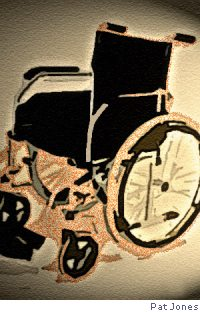
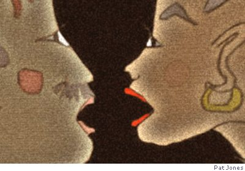
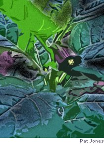

You saw it on TV — the footage showed
The mighty Ozymandian overthrow,
The falling statue and the cheering crowd —
And probably believed that it was so.
But see the picture taken from above
In black and white, a single grainy still
Which irresistibly reminds one of
The early work of Cecil B De Mille.
The close-up cheering of a small élite
Was caught on careful cameras, but not
The roadblocks at the end of every street
Lest uninvited extras spoiled the shot
Of History being created there
In one small corner of an empty square.
The Red Mud of Lydney
On a field trip to Gloucestershire, not long before he died,
The tired leaves of autumn were committing suicide
To the threnody of drizzle which was clearly in cahoots
With the red mud of Lydney that was sucking at my boots.
We were following our colleagues to the villa on the hill
With Philip in the wheelchair, doing splendidly until
We heard a noise behind us such as speedy people make
And turned and saw a four-by-four that wished to overtake.
The cure for our predicament was well within his gift;
His flat bed trailer might have offered us a lift,
But he gave the horn an irritated toot as if to say
That he was heading up the hill and we were in the way.
The man in the Land Rover didn’t try to pass,
He made me lug the wheelchair through the lateral morass.
He watched me as I struggled and he wouldn’t meet my eye,
Just raised his own to heaven with a hissy little sigh.
It took me every ounce of strength to haul it off the track
And I knew as I was doing it I’d never haul it back.
He found a gear and roared away and left us helpless there.
Oh, I would’ve pulled my forelock if I’d had a hand to spare.
Each time I see the wheelchair standing empty in the shed
Still muddily encrusted in that special shade of red
It galls me and appalls and transports me back again
To the loneliness and hopelessness of Lydney in the rain.

Risk Assessment
Written at the request of Blaenau Gwent Council prior to a series of poetry workshops in Bryn Bach Park. 20.06.04
The whole enterprise is fraught with hazard
When you come to think about it. No parent
Would ever let their child participate
Knowing the full extent of the danger.
Huddled for an hour in a sweaty tent
With only a poet to take care of them?
They could be inappropriately touched,
Approached by some ungodly reprobrate
Offering to show them skylarks in return
For a quick peep at their budding talent.
They might catch fire; rub two ideas together
And — poof! — spontaneous creativity!
Addiction is a possibility
And the susceptible may find themselves
Unable to resist the strong compulsion
To indulge repeatedly in the habit,
For, as the wise poet wrote on the packet,
This stuff can seriously affect the heart.*
*paraphrasing Elma Mitchell’s This Poem...
[‘Risk Assessment’ from Between Dryden and Duffy]
Changeling
He stretches out his hand across the desk.
“About the size” he says “of the first joint
of my little finger.” I look, carefully.
It isn’t that much larger than my own.
One unstressed syllable of a dactyl.
The end of ignorance; a piece of poetry.
Surely too small to be malevolent?
Just inconvenient and untoward.
Real living tissue, single-mindedly
Bent on continuing its own existence
Looking to me for nourishment and safety
Which it is in my power to deny.
He offers me a moment to decide,
Which I decline. I do not have a choice.
I shall abort you, little afterthought,
But not without a ripple of regret.
I wanted to have a picture of you;
I tried to buy one on the day they found you
But I was told the deal did not apply
To neoplasms — “only to babies”.
Dear Heart...
I’d like a word with you, my inner poem;
Have you time? I know what it is you’re doing
Now I have seen for myself the breakdown
Of your new independent prosody,
The red ink dwelling on the random stresses
Of your undisciplined running rhythm.
We have outgrown the iamb, you and I;
I, having lately come into my strength
Am stimulated by experiment
Nevertheless, it’s hard to see my own
Meticulously orchestrated epic
Dissolving into syncopated prose.
What do you have in mind for the coda?
Is it the quick kick and the sudden silence
Of a brisk Audenesque buggering-off
Or will it have a touch of comedy,
Me bowing out to fibrillating giggles
As you die laughing?
Not Much News...
How nice of you to ring. So unexpected.
No. I’m not busy. Yes, I’m on my own.
I wasn’t doing anything important.
Just happened to be sitting by the phone.
You don’t have to apologise. As always
You got the benefit of any doubt.
I didn’t feel neglected in the slightest,
I just assumed you’d rung while I was out.
Odd that you should have caught me at this moment,
First time in ages that I’ve thought of you.
Oh, blue-arsed fly, love, if you get my meaning,
It’s been a very busy week or two.
I’ve read a lot of proofs for other people.
I’ve drafted several chapters of the book.
It didn’t register you hadn’t written;
I haven’t hovered long enough to look.
I’ve caught up with a load of correspondence
And over half of it has been to you.
I tore it up and told myself I’d sent it
Because that’s what unhappy people do.
Gave myself toothache biting on a bullet.
Was not much taken with the taste of lead
So spat it out and wrapped it in a hanky.
Opted for doing something else instead.
Decided to apply the skills God gave me
To doing something that I do quite well;
Made an asbestos jacket for a snowball
So as to give it half a chance in hell...
The Defeated Hare Questions the Value of Retromingency
Trick question: what can the hare do that the tortoise can’t?
Smart answer: urinate backwards
(This is one for the TAPITS — the generous people who hand me such
serendipitous trouvailles, along with the promise “there’s a poem in that”.)
It blinks as it slinks bandy-leggedly into the spotlight
To the roar of the crowd and the laurels and the champagne
And yes, you can guess at the cause of the celebration:
Hey, no shit, Sherlock — the tortoise has done it again.
I am flat on my face on the ferny floor of the forest.
I’ve been snivelling, dribbling and muttering into the moss
And wiping my eyes with my ears (and it can’t do that, either)
And telling myself that I don’t give a twopenny toss.
I ought to be used to it, given how often it happens;
It’s the way of the world and I don’t have the right to complain
But it hurts and I’m sad and I wish it were me on the rostrum.
I’m alone in the dark and the tortoise has done it again.
Omniscient Pan, who distributed gifts to your minions,
Why on earth did you give me a retrodirectional cunt?
For what is the point of the power of pissing behind me
When the tortoise is always, always, always in front?
First-footing
Sun on the snow. We are first up, first out
To lay our claim to the unprinted page.
I trudge great boots along the lower margin.
Dog scribes his private joy across the slope
In wild graffiti, praising his own nature,
Writing as the ox ploughs, the ancient way,
Turning the footprints like Etruscan script
Now right, now left, in his innocent progress.
We lie at last in animal communion
Looking down at our own handiwork —
Manipulated whiteness, bearing witness
To two fools’ early-morning fortitude.
Look. Bottom left hand corner. Something stirs.
A squirt of multicoloured bobble-hats.
Children, coming about their own business.
Lids of recycling boxes, plastic bags
Lugged up the field, trundled across our writing
And ridden down and down and down again
Obliterating all our evidence.
A universalising metaphor...
Don’t even think about it. Home. Soup. Crossword.
Dialogue
He might be coming tonight, said Heart to Head.
No he won’t, Head replied, firmly. You heard what he said.
I know, said Heart, but still he didn’t exactly
turn me down flat.
Well, he wouldn’t, would he? said Head,
you know him better than that;
what he said was “barring a miracle” —
I thought you understood.
Granted, he did, said Heart, but he also said
he would if he could.
If he’d meant to come, said Head, he’d have mentioned trains;
he’d have confirmed the time.
So he forgot, so what? said Heart.
Since when has that been a crime?
Go on, said Head, firmly but gently. Pick up the phone,
ring and un-book the hotel.
Not yet, said Heart. But I will.
Why do you carry on playing, said Head
when there’s so little chance of winning?
Poor Head — am I “doing you in”? said Heart, grinning.
Death, even by a thousand cuts, said Head,
is still, ultimately, Death.
“Hope springs eternal in the human breast”,
said Heart, under its breath.
That was unworthy of you, said Head,
it’s a cliché, and it’s ugly.
“L’espoir luit comme un brin de paille dans l’étable”,
said Heart, smugly.
Straw doesn’t shine in stables, said Head,
it just lies there, soaking up shit.
That’s right, said Heart. That’s it.
Face it, said Head, not unkindly; he isn’t coming tonight.
I know, said Heart. But he might.

Blue Juice
Familiar name for Sodium Pentobarbital,
drug of choice for veterinary euthanasia…
Ultimate catflap, petdoor into eternity
And all the other merry euphemisms
That blur the hard edge of an act of love.
Blue Juice; tincture of courage and compassion
A rite of passage and a consummation
Of life which has simmered down to essences.
Blackberries, bleeding into the soft palms of children
Who snatch and swap and stuff their greedy mouths
With the free sweetness of the countryside,
Returning home with innocence belied
By the stigmata of their self-indulgence.
Bilberries. Rough wind on the high moors.
Pulling each other down among the wires
Out of its blusterous reach. Helping ourselves
To the rare opportunity of each other
Despite the splatterbruises of the berries
Printing their small betrayals on our skin.
Indelible pencil, drawing illicit pictures
On a licked forearm, making blue tattoos
That shimmer in the spit.
Atropa Belladonna, gentle purple,
Offering itself to me in the garden.
The light is going and I am alone.
I am aware of all the old wisdom,
The do not touch the tree imperatives
But finger and thumb reach out instinctively
To take the dare, to pick the fruit, to eat,
To stain my lips with the forbidden juice
Until I dance like Mark Antony’s soldiers,
Cannot distinguish truth and fantasy,
Lose my already ineffective voice
And fly till flying takes my breath away.

Water
For Kenneth Steven, who asked for it
Its small manifestations move me most.
The jewelled trickle on a chilly bottle.
The snotty gobbets of dissolving frost
on nostril-whiskers of outwintered cattle.
The cold sheen covering a limewashed wall
where the upwardly mobile damp has gathered.
The diamante shimmer over all
the webs with which the windowframes are feathered.
Bright drops tossed from the wet necks of cormorants
who have begun to come too far upriver
in search of what the sea no longer grants,
questioning our perception of forever.
I write my name in it, careful and clear,
to watch it dull, dry up and disappear.
New Fruit
In the last knockings of the evening sun
Eve drinks Calvados. Elsewhere in her life
She has played muse and mistress, bitch and wife.
Now all that gunpoint gamesmanship is done.
She loves the garden at this time of day.
Raising her third glass up to God, she grins;
If this is her come-uppance for her sins
It’s worth a little angst along the way.
A fourth. Again the cork’s slow squeaky kiss.
If, as the liquor tempts her to believe,
The Lord has one more Adam up His sleeve
He’s going to have to take her as she is —
Out in the garden in a dressing-gown
Breathing old apples as the sun goes down.
[from Backwork]
Poems on this page are from Ann Drysdale’s forthcoming new collection Quaintness and Other Offences except where stated otherwise.